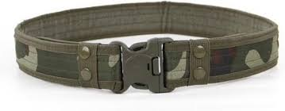
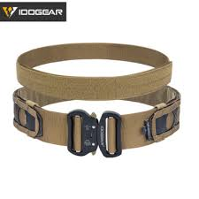
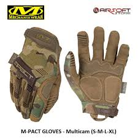
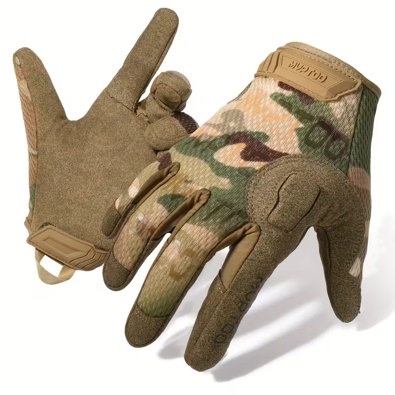
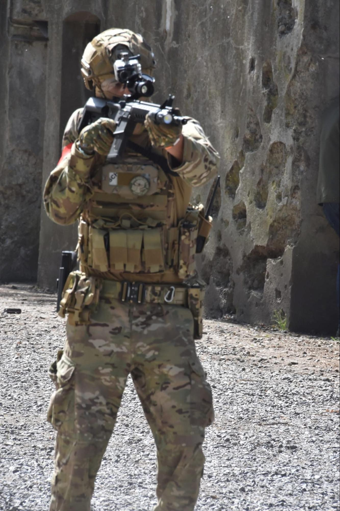

We kennen het allemaal, je wilt beginnen met airsoft maar je weet niet waar. Geen zorgen, deze blog gaat je helpen. Deze blog dient voor mensen die willen beginnen met airsoft maar even goed voor mensen die een beetje kennis hebben en wat meer geavanceerd zijn of die willen avanceren.
Waarmee begin je?
Het is altijd enorm belangrijk dat je zeker weet dat je in deze sport wil investeren, daarom raad ik aan om eerst een aantal keer een replica te huren bij het terrein waar je gaat spelen. Als je dan nog steeds een groeiende liefde hebt voor de sport kan je een replica kopen en alle noodzakelijke extra's.
“Ik wil een replica kopen, maar welke?” is een vraag die ik heel veel krijg. Ik raad absoluut een AEG (Automatic Electric Gun) aan als eerste replica. Deze zijn redelijk makkelijk te onderhouden en zijn makkelijk te gebruiken. Als je ondertussen wel al wat langer aan airsoft doet kan je ook al richting GBB (Gas Blowback) of GBBR (Gas Blowback Rifle) gaan en dan misschien ook HPA (High Pressure Air).
De replica's op gas zijn een beetje prijzig maar ze zijn veel realistischer en leuker om mee te spelen. Je kan een AEG ook omvormen naar een HPA
Dit zou ik wel niet doen als je net begonnen bent, maar als je een beetje meer geavanceerd bent in de sport is het wel een leuk project.
Voor de magazijnen van je replica heb je een aantal keuzes.
- Real Cap
- Low Cap
- Mid Cap
- High Cap
Real Cap zegt het zelf al, het is een realistische versie van het magazijn, deze kan 30 bbs houden. Low Cap heeft een laag aantal bbs, deze kan 30 tot 100 bbs houden. MidCap kan ongeveer van 100 tot 190 bbs en alles daarboven wordt als High cap beschouwd.
Ik gebruik meestal Mid Caps omdat je magazijn dan niet aan het ratelen is maar om te beginnen kan je gewoon High Cap gebruiken.
Je hebt nu een replica gekocht en je vraagt je nog steeds af wat voor extra's je moet hebben, welke kleur het beste is, of het oké is om met goedkope producten te gaan, hoe je je airsoft replica onderhoudt. Dit gaan we ook behandelen.
Kleding
Qua kleding hoef je niet al te veel geld uit te geven, het kan wel, het is ook een stukje aangenamer om een betere kwaliteit shirt te dragen, maar het is niet nodig. Je kan prima een broek en hemd kopen op een goedkopere website zoals AliExpress of temu, vooral als je net begonnen bent. Je kan ook al betere kwaliteit tegen een niet al te hoge prijs vinden op amazon of officiële airsoft websites. Als je dan langer speelt en vaker kan je wel investeren in betere kwaliteit.
Tactical Gear
Dit houdt in: Plate Carrier, Pouches, Rugzak, Riem, (Hand)Schoenen, Helm, …
Plate Carrier
De Plate carrier is iets waarin je best wel een beetje zou investeren, anders ga je het heel warm hebben. Hij moet best ventilerend zijn en voor de plaat in de vest zelf kan je best Mesh hebben. Uit persoonlijke ervaring kan een Plate Carrier wel duur zijn.
Voor ~€100 kan je al een redelijke Plate Carrier hebben.
Riem
Er zijn wel wat verschillende varianten van riemen. Je hebt er met velcro, de basic riem, riemen die amper vast hangen. Ik raad er een met velcro wel aan omdat je hierop wel wat kan monteren. Bij deze riem moet je een velcro riem door de riemlussen van je broek doen en daarna kan je de echte riem hierover “plakken”. Deze kosten ongeveer €30.
Normale riem

Velcro riem

Pouches
Pouches zijn “zakken” of opslag delen waar je magazijnen in kan steken, extra batterijen, eten, EHBO set, Portofoon, … Je hoeft al deze dingen niet te hebben maar als je al dit extra wil hebben ga je wel een beetje plek nodig hebben op je Plate Carrier en/of Riem.
Je hebt een aantal verschillende soorten pouches. Je hebt Magazine Pouches, Portofoon Pouch, Storage Pouch, Grenade Pouches, en nog wel een aantal meer.
Magazine Pouches zijn enorm belangrijk zodat je je magazijnen niet kwijtspeelt en dat je ze snel kan wisselen. Deze komen mee op je Carrier of moet je apart nog kopen, Dat moet je zelf even checken.
Portofoon pouch moet je niet per se hebben want je portofoon kan je in een van je magazine pouches steken. Je kan er wel een hebben als je echt op een specifieke plek je portofoon wil hebben.
“Storage” Pouch (of gewoon Opslag Pouch) spreekt ook al voor zichzelf, dit is een Pouch waarin je dingen bewaard zoals batterijen, extra onderdelen, duct tape, … Deze is wel handig zodat je extra spullen kan meenemen. Als ik op een groot veld ga spelen neem ik ook altijd een EHBO kit mee .
De meeste van de Pouches die je koopt zeggen meestal wel waarvoor ze dienen in de naam en anders moet je even de beschrijving lezen.
Rugzak
Een rugzak moet je niet altijd meenemen, hangt ook sterk af van welk evenement je doet.
Een grote tas/rugzak om je al je spullen te vervoeren naar het veld zelf is verplicht, ook je replica moet in een wapenkoffer of wapentas zitten. Het is echter illegaal om je replica in een openbare ruimte te tonen. Zoek best even de wetgeving van het land waar je naartoe gaat om te spelen en waar je woont.
Qua kleine rugzak, het kan handig zijn als je extra dingen moet meenemen bijvoorbeeld: Water, Gas, Hpa tank, … Het is niet verplicht en niet nodig.
(Hand)schoenen
Handschoenen moeten niet duur zijn, ik heb de mijne ook goedkoop gekocht, maar je merkt het verschil tussen hoge en lage kwaliteit handschoenen. Bij lage kwaliteit handschoenen zullen deze plastic achtig aanvoelen en bij hoge kwaliteit handschoenen voel je de stof wel echt en ze zijn meer ventilerend. Zoveel verschil maakt het nu ook weer niet dus de handschoenen gaan weer richting de vraag “Hoeveel wil je uitgeven aan de sport”.
Hoge kwaliteit handschoenen

Lage kwaliteit handschoenen

Schoenen is hetzelfde als de Handschoenen de enige criterium die echt uitmaakt is dat de schoen uitkomt boven de enkel, dit is zodat je je voet niet omslaat als je over oneffen terrein loopt en je wil ook niet je mooie sneakers vuil maken als je door modder, water en tunnels loopt.
Helm
Een helm is erg handig als hoofdbescherming en voor dingen op te monteren.
Je kan er bijvoorbeeld een GoPro op monteren of een zaklamp. Het is aangeraden om het originele interieur er uit te halen en deze te verbeteren.
Verbeteringen Replica
Je hebt je replica al maar hij schiet niet goed, er is iets stuk aan of je wil gewoon weten hoe je hem onderhoudt. In dit deel van de blog ga ik uitleggen hoe dit allemaal in elkaar zit.
Hop-up
De hop-up is een component dat op de barrel zit dat de bb backspin geeft, dit zorgt ervoor dat de bb verder kan zweven. De beste verbeteringen hieraan is geen nieuwe hop-up, het is geen nieuwe barrel, Je moet je barrel een keer schoonmaken. Dit doe je met de staaf die in de doos met de replica kwam. Hierop zet je een doekje en ga je niet te ruw de barrel in.
Wat je na een tijdje ook best doet is de bucking en de nub vervangen. De bucking is een rond rubber of silicone component dat je over de barrel schuift. Dit is het deel dat effectief in contact komt met de bb en zorgt dat deze backspin krijgt. Als je bucking versleten is of hij zit niet goed, dan gaat je replica niet zo nauwkeurig schieten. De nub is het deel dat de bucking naar beneden duwt zodat hij een goed contact kan maken met de bb. Deze is meestal rubber, maar je kan best een harde kopen (van een soort plastic).
Gearbox
De gearbox is een verschrikkelijk irritant deel van de replica om aan te werken, Maak deze dan ook niet open als je er niets van kent. Je brengt hem dan best binnen bij een winkel ter reparatie.
Als je de waarschuwing toch wil negeren, dit is wat er allemaal aan je gearbox kan zijn en hoe je het repareert.
Wat je best kan doen voordat je de gearbox openmaakt is kijken of de motor nog wel werkt, die zit onder de achterste grip. Als deze niet werkt ga je waarschijnlijk in de diepste hellen van de gearbox moeten duiken.
Als je hem open doet dan ga je een paar verschillende delen zien.
- De tandwielen
- De trigger
- De zuiger
En misschien ook een mosfet.
De tandwielen kunnen kapot gegaan zijn, check dus even of alle tanden er nog opzitten als dit niet zo is dan 1. haal je de tandwielen er uit en haal je de ringen die op de tandwielen zitten. 2. zet de tandwielen in de gearbox en check of er veel speling is. Te veel speling, een ring op de tandwiel, te weinig speling, een ring er af. 3. voeg smering vet toe zodat je vet op vet contact hebt en geen metaal op metaal, anders gaan ze snel weer kapot.
Aan de trigger ga je meestal niet veel problemen hebben en anders zet je er heel gemakkelijk een nieuwe op.
De tanden van de zuiger kunnen er ook af zijn of gestript dus check ook even om te zien of die nog heel is. Je kan ook slechter schieten als je O-ringen slecht zijn. Die kan je best ook even vervangen als dat al een tijdje geleden is.
Bij het terug in elkaar steken ga je veel sukkelen maar het is belangrijk dat je rustig blijft, anders gaat het al zeker niet lukken.
Bij het externe gedeelte van de replica kan je ook dingen verbeteren. een betere richtkijker er op zetten, een zaklamp, een laser (alhoewel deze illegaal zijn in België), een suppressor, een tracer unit, … dit is echter bijzaak en is niet echt nodig. Als je binnen speelt kan je best wel een zaklamp gebruiken.
Regels & Wetten
Zorg er voor dat je de regels van het veld kent en de wet een beetje, deze informatie is op de website van de lokale airsoftvereniging te vinden.
Hier zijn toch een paar belangrijke wetten en regels.
- Transporteer je spullen in een tas en een wapenkoffer.
- Houd je aan de Joule regels, deze zijn er voor de veiligheid.
- Luister naar de marshalls.
2 Hele belangrijke regels dat airsoft maakt wat het is.
- Als je geraakt wordt, roep je hit, steek je je hand in de lucht en wandel je terug naar spawn of vraag je een medic als deze er is. Als je je hit niet neemt wordt je van het veld gegooid.
- “Dead man don’t speak” betekent als je gehit wordt dat je moet zwijgen tegen je teamgenoten en geen waardevolle informatie mag doorgeven.
Sociaal
Veel mensen in de airsoftgemeenschap zijn altijd blij om te helpen, Iedereen heeft een gemeenschappelijk doel en er wordt 99% van de tijd niet geoordeelt over wat je doet, wie je bent, hoe je gekleedt bent of je nieuw bent. Als je vragen hebt kan je ze altijd stellen. Je kan ook met bijna iedereen praten en de meeste mensen zijn er om plezier te hebben en zijn heel verwelkomend.
Bij twijfel aan mijn kennis en competenties, dit ben ik:

Nu dat je deze blog gelezen hebt, heb je hopelijk wat bijgeleerd en weet je nu hoe je er aan moet beginnen.